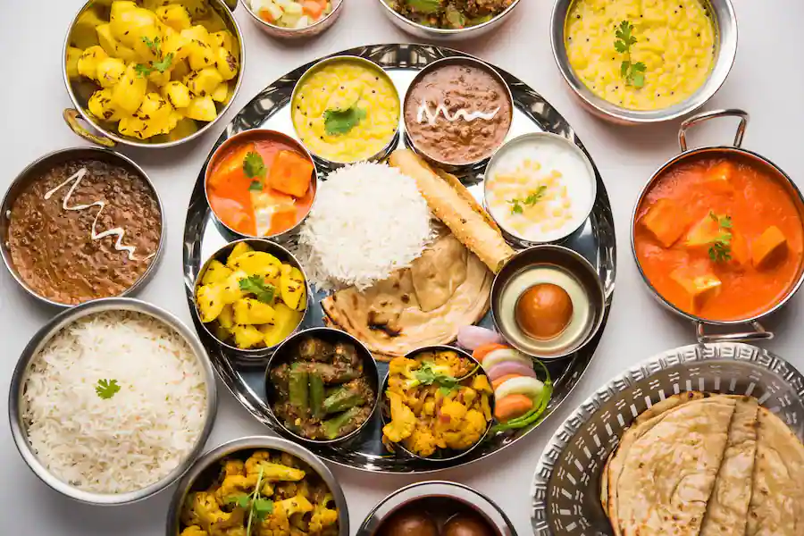
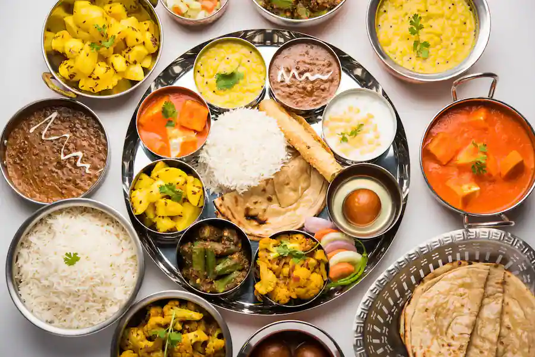

Embark on a luxurious culinary journey through the rich tapestry of Asian flavors at our esteemed restaurant. Indulge in the opulence of our carefully curated menu, where the artistry of Asian cuisine is elevated to new heights. From the delicate precision of Japanese sushi to the sumptuous elegance of Indian spices, every dish is a masterpiece, thoughtfully crafted by our world-class chefs. Immerse yourself in the luxury of Chinese delicacies, the refined allure of Thai curries, and the comforting embrace of Vietnamese pho, all presented with a modern twist that ignites the senses. Whether you're a connoisseur of fine dining or seeking to explore the heights of Asian culinary excellence, our restaurant promises an unparalleled and opulent experience that celebrates the true essence of luxury in every bite. Click Here for Menu
 

Embark on a luxurious culinary journey that traverses the rich tapestry of European flavors at our prestigious restaurant. Our menu is a testament to the opulence and refinement of European cuisine, meticulously crafted to offer you an extraordinary gastronomic experience. From the decadent indulgence of Italian truffle dishes to the timeless elegance of French haute cuisine, each plate is a masterpiece that reflects the pinnacle of culinary artistry and luxury. Immerse yourself in the sumptuousness of Spanish paella, the delicate intricacies of Swiss chocolates, and the regal charm of British high tea. Elevate your dining experience to new heights as you savor the symphony of flavors that Europe has to offer, where every dish is a celebration of luxury, culture, and exceptional taste. Join us for an unforgettable culinary escapade that embodies the essence of European opulence and sophistication. Regenerate Click Here for Menu


Embark on a luxurious culinary journey that traverses the rich tapestry of European flavors at our prestigious restaurant. Our menu is a testament to the opulence and refinement of European cuisine, meticulously crafted to offer you an extraordinary gastronomic experience. From the decadent indulgence of Italian truffle dishes to the timeless elegance of French haute cuisine, each plate is a masterpiece that reflects the pinnacle of culinary artistry and luxury. Immerse yourself in the sumptuousness of Spanish paella, the delicate intricacies of Swiss chocolates, and the regal charm of British high tea. Elevate your dining experience to new heights as you savor the symphony of flavors that Europe has to offer, where every dish is a celebration of luxury, culture, and exceptional taste. Join us for an unforgettable culinary escapade that embodies the essence of European opulence and sophistication. Regenerate Click Here for Menu